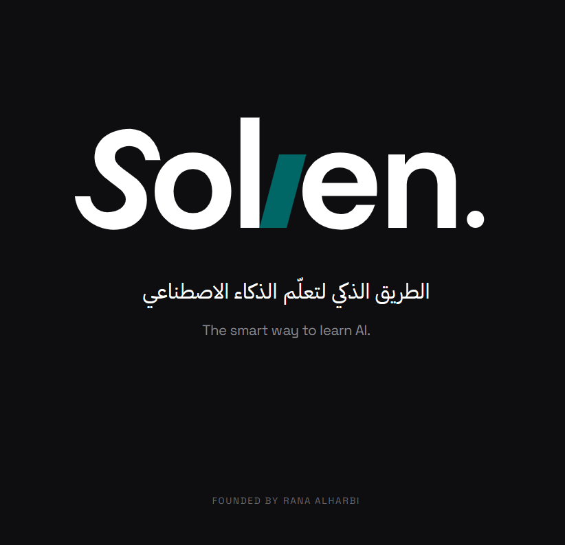

Solven سولفن
Make Artificial Intelligence simple. Make it practical.
Solven helps people across professions apply AI, AI agents and automation to real work without becoming programmers first.
Founder · Published and active
The problem
Most AI content is written either for engineers or for casual curiosity. Very little is built for someone who wants to use AI well in their own job.
Purpose and approach
Solven is a place to learn AI, AI agents and automation the way they are meant to be used: as tools for solving real problems.
AI across professions
Not everyone needs to become a technical expert to benefit from AI. They need a clear, honest guide to apply it well.
Who it is for
People from technical and non-technical backgrounds who want to use AI in their work.
A note from the founder
I'm Rana Alharbi, the founder of Solven. My background is in Information Systems, where I first became interested in how technology, when explained clearly, changes the way people work.
That interest led me to Artificial Intelligence: not as a technical specialty, but as a practical tool that is becoming part of everyday work across every profession.
Over time, I noticed a gap. Most AI content is written either for engineers or for casual curiosity, and very little of it is built for someone who simply wants to use AI well in their own job, without first becoming a programmer.
I created Solven to close that gap: a place to learn AI, AI agents, and automation the way they're actually meant to be used, as tools for solving real problems.
My goal for Solven is simple: to make Artificial Intelligence practical, simple, and accessible to everyone, regardless of their profession or technical background.
Not everyone needs to become a technical expert to benefit from AI. They need a clear, honest guide to help them apply it well.
Make Artificial Intelligence simple. Make it practical.